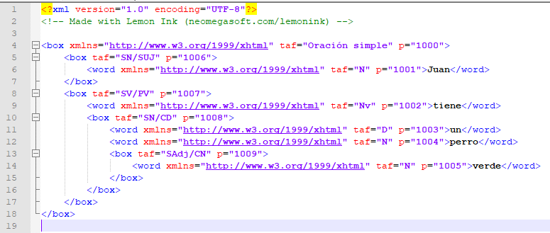
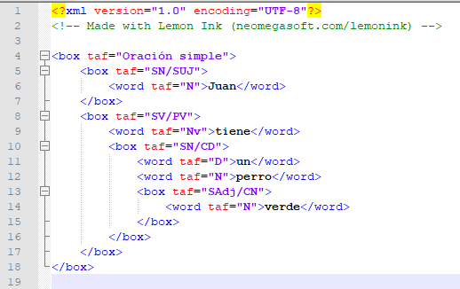
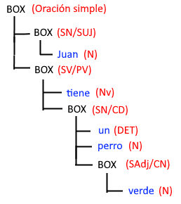

Código en Lemon Ink
El formato XML de Lemon Ink es un lenguaje de etiquetas (o marcas) que permite guardar los datos de la oración en curso en un formato legíble. Esto, permite que el usuario pueda escriba la oración en formato de código en cualquier editor de texto y posteriormente visualizarlo en Lemon Ink.
Partes
Aquí podemos ver un ejemplo de la oración "Juan tiene un perro verde", en el programa Notepad++ para verlo visualmente más claro.

El archivo comienza con una línea que define la versión de XML y otra que sirve como marca de agua para Lemon Ink.
Ignorando esas primeras líneas, podemos ver que la oración se compone de una serie de etiquetas <box> y <word>. Las etiquetas box representan a los grupos, que contienen más grupos y palabras. Los elementos word representan a las palabras de la oración.
Todos los elementos de este archivo tienen varios atributos, como p y taf. El atributo p no interviene en la representación gráfica de la oración, pero es indispensable para que Lemon Ink permita editar la oración. En cambio TAF (tipo y función), es el valor que tendrá el elemento en la oración.
En ocasiones se presenta el atributo xmlns este atributo es completamente contigente y podemos prescindir de él. Vamos a eliminar xmlns y p para entender mejor la oración:

Una manera de entender esto de otra manera sería:
